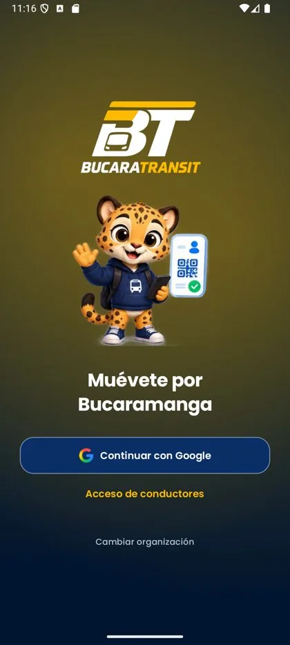
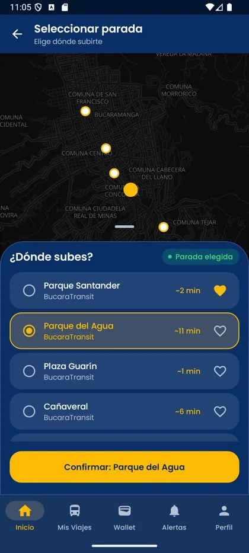
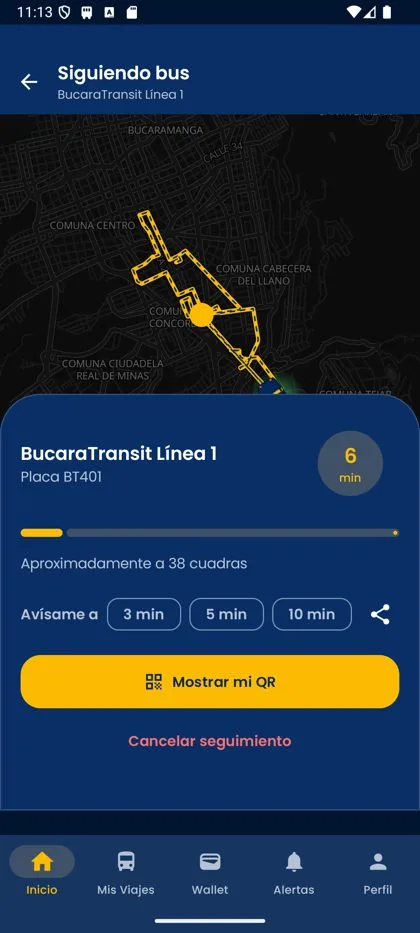
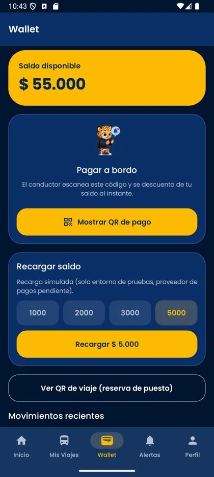
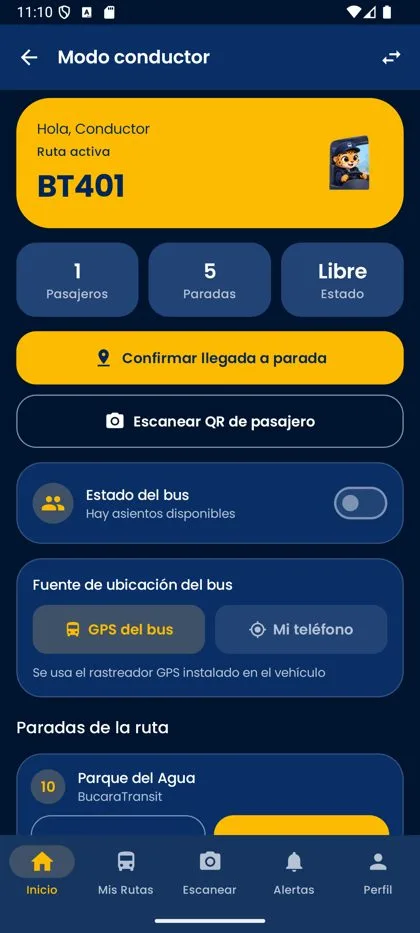
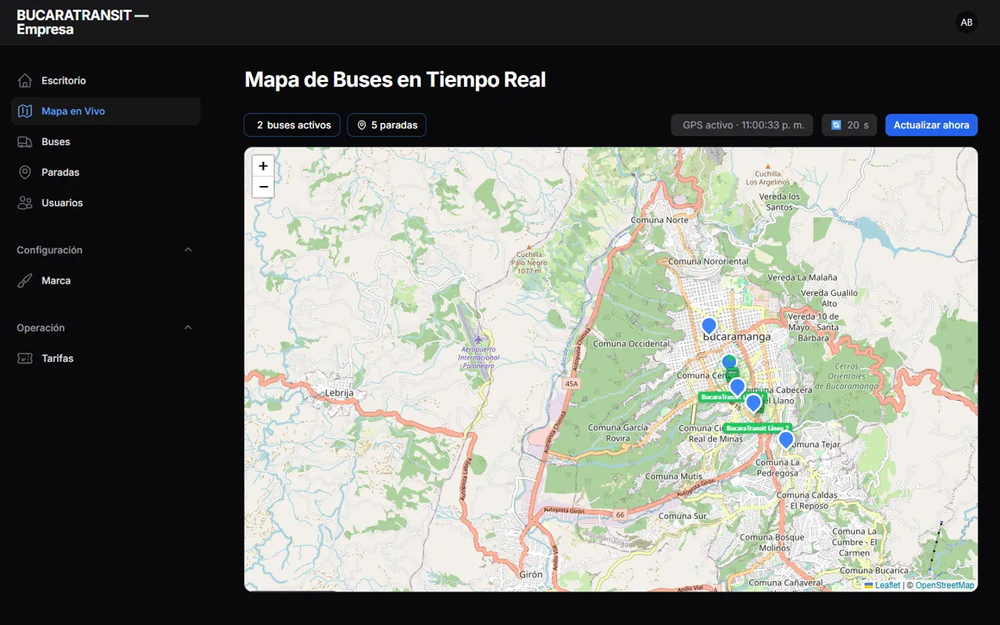
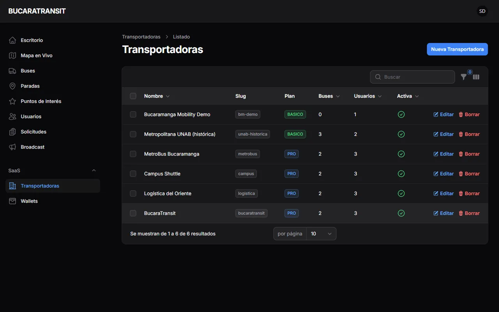

Plataforma de movilidad urbana multi-tenant: buses en vivo, wallet prepago y QR dinámico firmado.
José Alejandro Téllez PradaU00060479 · Arquitectura
Marcos Valera DazaU00177223 · Backend
Jaime Alejandro Vega BarbosaU00178766 · App móvil
Backend · Sexto semestre UNAB · 2026
En pocas palabras
Pagar el bus con el celular, sin que nadie pierda un peso.
BUCARATRANSIT une a las transportadoras de Bucaramanga en una sola plataforma. El pasajero recarga un saldo, muestra un QR y el conductor lo cobra con su teléfono. Cada empresa ve solo lo suyo y todo queda registrado de forma auditable.
Wallet prepagoLedger de doble entradaQR firmado · 60 s · un solo usoMulti-tenant en 3 capasChaos Engineering304 pruebas verdes
Problema y justificación
Tres fricciones diarias en el bus de Bucaramanga.
01 · EFECTIVO
Cobro manual
El conductor maneja dinero y vuelto mientras conduce: lento, riesgoso y sin trazabilidad. Cada pasaje en efectivo es una fuga potencial de recaudo.
02 · FRAGMENTACIÓN
Cada empresa, un silo
No existe un medio de pago ni una vista de rutas común entre transportadoras. El pasajero y la ciudad pagan el costo de la desconexión.
03 · INCERTIDUMBRE
¿Cuándo llega mi bus?
Sin ubicación en vivo ni tiempo estimado, planear un trayecto es adivinar. El tiempo de espera se pierde sin información.
Justificación: una plataforma neutral que unifique pago, rutas y datos sin que ninguna empresa vea a las otras.
Referente teórico
Cada decisión de diseño tiene una base.
MULTI-TENANCY
Esquema compartido
Una base de datos, una discriminación por transportadora_id: menor costo operativo, mayor riesgo de fuga si falla el aislamiento. [1][2]
DINERO COMO INFRAESTRUCTURA
Ledger e idempotencia
Asientos inmutables de doble entrada, montos enteros y operaciones idempotentes para tolerar reintentos sin duplicar cobros. [3][4]
AUTENTICIDAD
HMAC y un solo uso
Un código firmado con clave del servidor no se puede falsificar; un TTL corto y consumo atómico impiden la reutilización. [5][6][7]
RESILIENCIA
Chaos Engineering
Inyectar fallas controladas para validar patrones de degradación elegante, fallback, bulkhead y cache-aside. [8][9][10]
IDENTIDAD Y API
REST + tokens
API REST sin estado con tokens personales (Sanctum) y OAuth 2.0 para el ingreso con Google. [11][12]
MARCO NORMATIVO
Datos y calidad
Tratamiento de datos personales (Ley 1581 de 2012) y atributos de calidad de software (ISO/IEC 25010). [13][14]
La solución
Una plataforma, tres actores.
Pasajero. Mapa en vivo, ETA, wallet y QR de pago.
Conductor. Su teléfono es el mPOS: escanea y cobra.
Transportadora. Panel propio de flota, rutas y tarifas.
Plataforma. Super admin con vista global y kill-switch.
Figura 1 · Arquitectura general
Seis contenedores, una sola entrada.
Aislamiento multi-tenant
Tres capas para que una empresa nunca vea a otra.
CAPA 1 · DATOS
GlobalScope
El trait BelongsToTenant filtra automáticamente toda consulta por transportadora_id cuando hay un tenant en contexto.
CAPA 2 · API
Middleware
EnsureTenantScope verifica que el recurso de la ruta pertenezca al tenant y activa el contexto durante toda la petición.
CAPA 3 · RESPUESTA
404 silencioso
Pedir un recurso ajeno devuelve 404, nunca 403: ni siquiera se revela que existe.
Verificado en TenantIsolationTest: el usuario del tenant A recibe 404 en recursos del tenant B.
Figura 2 · Modelo de datos esencial
El dinero vive en un libro que no se edita.
Figura 3 · Diagrama de secuencia del pago con QR
Un QR que se usa una sola vez.
App móvil · Kotlin Multiplatform
Lo que ve el pasajero.

Marca dinámica

Elige tu parada

Siguiendo el bus

Wallet y QR

Modo conductor
Paneles de administración
Cada empresa ve solo lo suyo.

/empresa · mapa filtrado a su propia flota

/admin · varias transportadoras, plan y kill-switch
Tabla 1 · Resultados de Chaos Engineering
Apagamos cosas a propósito.
Falla inyectada
Patrón evaluado
Comportamiento observado
Resultado
GPS externo caído
Degradación elegante
El endpoint responde 503 con mensaje claro; no hay excepción sin manejar
Resiste
Google OAuth caído
Fallback
El inicio de sesión con correo y contraseña toma el relevo
Resiste
MySQL o Redis caídos
Bulkhead · cache-aside
Contenedores aislados: la caída de uno no tumba a Nginx; sin Redis la app degrada
Resiste
Worker de colas caído
Proceso asíncrono
La API sigue respondiendo; las notificaciones se encolan
Resiste
20 intentos seguidos de login
Rate limiting
Desde la petición 11 el servidor responde HTTP 429
Resiste
Nginx caído
—
Sin proxy la app es inaccesible: punto único de falla
Mitigar: balanceador
Verificación
Lo que decimos, lo probamos.
304
pruebas automatizadas pasando
1253
aserciones
60 s
vida de cada QR, un solo uso
0
fugas entre tenants en las pruebas de aislamiento
Suites clave: TenantIsolationTest · WalletServiceTest · QrHardeningTest · QrIdempotencyTest · RateLimitingTest. Al cierre del pivote eran 88 pruebas y 257 aserciones.
Limitaciones y desafíos
Lo que todavía no está resuelto.
Limitación
Impacto
Siguiente paso
Recarga simulada
No entra dinero real al wallet
Proveedor de pagos con webhooks idempotentes (F4)
Una sola VM
Punto único de falla (Nginx, host)
Balanceador y varias instancias
Secretos en el historial
Claves antiguas en commits previos
Rotar claves y evaluar limpiar el historial
iOS y UI sin probar
Cobertura solo de lógica y API
Pruebas de pantallas y simulador iOS
Cobro solo por QR
Exige cámara y datos en el bus
NFC y modo sin conexión con conciliación
Trabajo futuro
De prototipo verificado a servicio de ciudad.
F0–F3 · HECHO
Fundamentos
Tenancy, wallets y ledger, QR de pago, paneles y mPOS conductor.
F4 · SIGUIENTE
Pagos reales
Proveedor de pagos, webhooks idempotentes y conciliación.
F5 · FUTURO
NFC y rutas
Pago por NFC y motor de enrutamiento multiempresa.
OPERACIÓN
Alta disponibilidad
Balanceador, réplicas y monitoreo continuo.
Referencias
Bibliografía (IEEE).
[1]C.-P. Bezemer and A. Zaidman, “Multi-tenant SaaS applications: maintenance dream or nightmare?,” in Proc. IWPSE-EVOL, 2010.
[2]F. Chong and G. Carraro, “Architecture strategies for catching the long tail,” Microsoft Corp., 2006.